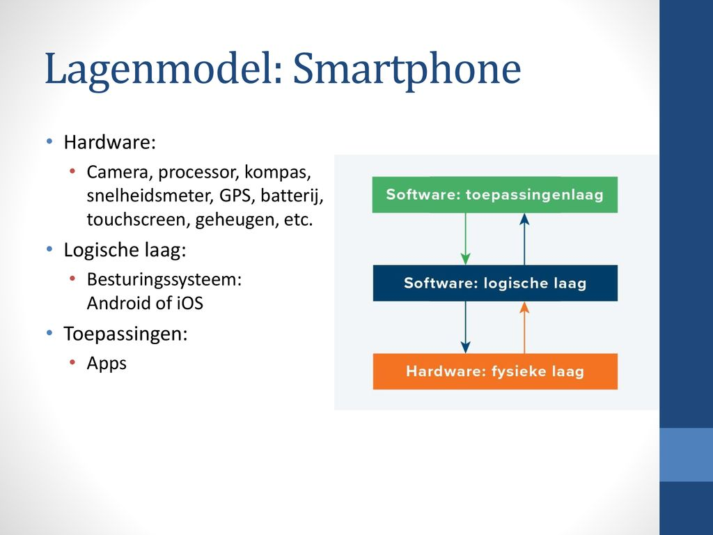

<!DOCTYPE html>
<html>
    <head>
        <title>Page Title</title>
    </head>
</html>

<h1>Het 3-lagenmodel</h1>
<p>Hoe de hardware en software van het apparaat samenwerken, is verdeeld in drie gestapelde 'lagen'. Laten we de smartphone als voorbeeld nemen. Het bevat de volgende lagen:

    fysieke laag. Deze laag bestaat uit de hardware in de smartphone: van de batterij tot het touchscreen.
    De logische laag bestaat uit software die de hardware aanstuurt. De software maakt het mogelijk om applicaties (zoals applicaties) op het apparaat te draaien. Bij smartphones bestaat de logische laag vooral uit een besturingssysteem, zoals Android of iOS. We noemen het een besturingssysteem omdat het de hardware bestuurt. Het bepaalt bijvoorbeeld ook welke acties een applicatie mag uitvoeren.
    De toepassingslaag bestaat uit verschillende software: toepassingen of applicaties. Op smartphones kunnen deze apps geïnstalleerd worden vanuit Play of de App Store. Software op de toepassingslaag kan alleen via de logische laag communiceren met de fysieke laag.</p>

